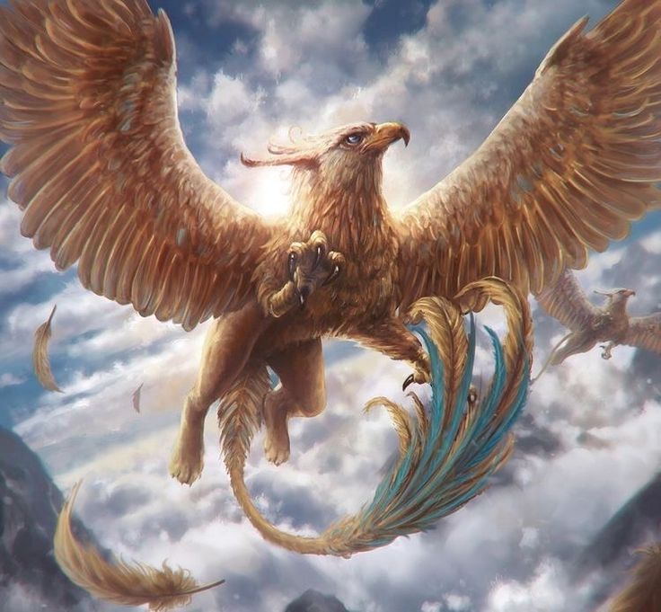
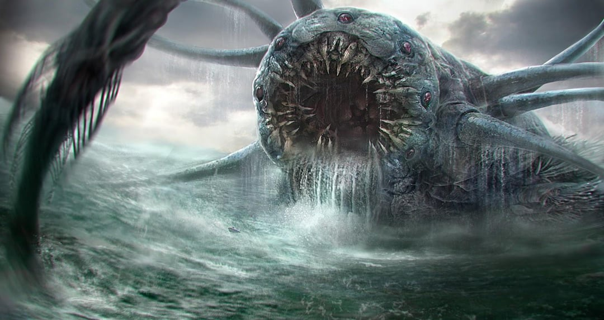
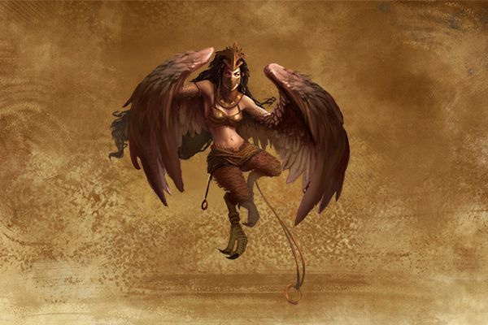
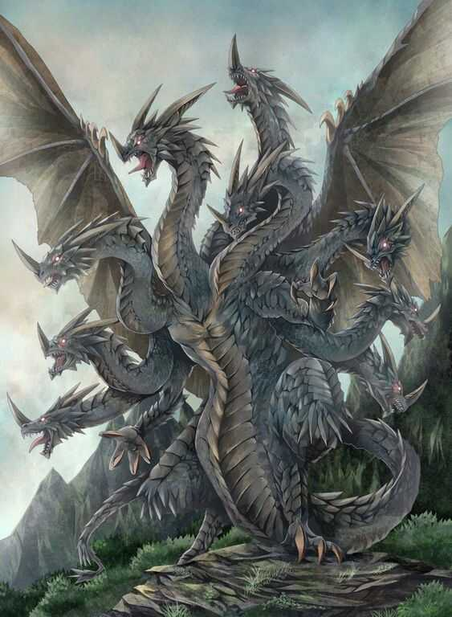

Mitologia Grega
Deuses, heróis e criaturas da Grécia Antiga
A Origem do Mundo
Imagine um tempo tão distante, onde nem mesmo o tempo existia. Não havia luz, nem escuridão. Era como se o universo inteiro estivesse dormindo num vazio absoluto. Esse vazio os gregos chamavam de Caos.
O que era o Caos?
Ao contrário do que a palavra pode sugerir, o Caos na mitologia grega não era confusão, ele era simplesmente nada. Um espaço sem forma, sem cor, sem som. A partir desse nada, começaram a surgir as primeiras forças do universo, e é aqui que começa a grande história da criação do mundo segundo os gregos.
Os Primeiros Seres do Universo
Do Caos surgiram os primeiros seres fundamentais:
- Gaia – A Terra. Ela é como a "mãe de tudo", a base onde tudo vai acontecer.
- Tártaro – Um abismo profundo, mais abaixo até que o mundo dos mortos. É uma espécie de prisão cósmica.
- Nix – A Noite. Uma força escura e misteriosa.
- Érebo – A Escuridão que habita o submundo.
- Eros – O Amor primordial. Eros era a força da atração que fazia tudo querer se unir, gerar, criar.
A primeira a se tornar protagonista foi Gaia. Sozinha, ela deu origem a:
- Urano (o Céu) – que se estendia sobre ela, cobrindo-a por completo.
- Montanhas e Mares, que surgiam do seu próprio corpo.
Gaia e Urano se tornaram parceiros e deram início à criação de muitos outros seres.
O Nascimento dos Titãs e o Conflito Familiar
Juntos, Gaia e Urano geraram os Titãs, gigantes com poderes incríveis, como:
- Cronos – o mais novo e ambicioso.
- Réia, Têmis, Hipérion, Oceano, entre outros.
Mas também criaram seres assustadores, como os Hecatônquiros (gigantes com 100 braços e 50 cabeças) e os Ciclopes (gigantes com um olho só no meio da testa).
Urano tinha medo dessas criaturas e as escondia dentro do ventre de Gaia, causando dor a ela. Indignada, Gaia planejou um golpe contra Urano. Deu uma foice a Cronos (seu filho) e o convenceu a atacar o próprio pai. Cronos castrou Urano e tomou o seu lugar como líder.
Do sangue de Urano que caiu sob a Terra, surgiram outras criaturas importantes:
- Erínias – deusas da vingança.
- Gigantes
- Afrodite – a deusa do amor e da beleza, que nasceu da espuma do mar misturada com o sangue.
Cronos e o Medo da Profecia
Agora no poder, Cronos se casa com sua irmã Réia. Um dia, Cronos descobre uma profecia: um de seus filhos o destronará, assim como ele fez com o próprio pai.
Para evitar isso, ele engole todos os filhos que Réia dá à luz. Um a um: Héstia, Deméter, Hera, Hades e Poseidon.
Réia, desesperada, decide salvar o próximo bebê: Zeus. Ela o esconde em uma caverna na ilha de Creta e entrega uma pedra enrolada em panos para Cronos engolir.
Zeus cresce em segredo, alimentado por uma cabra mágica chamada Amaltéia, até se tornar forte o suficiente para enfrentar o pai.
A Guerra dos Deuses: Titanomaquia
Quando Zeus está pronto, ele engana Cronos e o faz vomitar seus irmãos. Juntos, eles formam um grupo de jovens deuses — os Olimpianos.
Mas Cronos ainda tem ao seu lado os Titãs. O que se segue é uma guerra épica que dura 10 anos, chamada de Titanomaquia.
Do lado de Zeus:
- Seus irmãos e irmãs.
- Os Ciclopes, que lhe dão o raio como arma.
- Os Hecatônquiros, com seus cem braços destruidores.
Do lado de Cronos:
- Quase todos os Titãs, menos Prometeu e Oceanos, que preferem não lutar.
Zeus finalmente vence. Como punição, aprisiona os Titãs rebeldes no Tártaro e coloca os Hecatônquiros como guardiões.
A Divisão do Mundo
Com a vitória, Zeus e seus irmãos dividem o governo do universo:
- Zeus – recebe o céu e o trono do Olimpo.
- Poseidon – comanda os mares.
- Hades – fica com o mundo dos mortos, o submundo.
E assim começa a era dos Deuses Olímpicos, os mais famosos da mitologia grega.
Deuses Principais
Após a vitória sobre os Titãs e a conquista da ordem no universo, os deuses conhecidos como Olimpianos passam a governar os diferentes aspectos da existência. Cada um possui características próprias, símbolos e áreas de domínio, desempenhando papéis centrais nas histórias, crenças e rituais da Grécia Antiga.
ZEUS – Soberano dos Céus e dos Deuses
- Domínio: Céu, trovões, leis, ordem.
- Símbolos: Raio, águia, trono.
Zeus é o líder do panteão grego e responsável por manter a ordem entre os deuses e os humanos. Famoso por sua força e justiça, também se envolve em diversas histórias românticas e conflitos familiares.
HERA – Deusa do Casamento e da Realeza
- Domínio: Casamento, fidelidade, proteção da família.
- Símbolos: Pavão, romã, diadema.
Esposa e irmã de Zeus, Hera é a rainha do Olimpo. Embora represente a união conjugal, é frequentemente retratada como ciumenta e vingativa, especialmente contra os amantes e filhos de Zeus.
POSEIDON – Senhor dos Mares
- Domínio: Oceanos, terremotos, cavalos.
- Símbolos: Tridente, cavalo, golfinho.
Irmão de Zeus, Poseidon governa os mares. Seu temperamento instável o torna responsável por tempestades e maremotos. É uma figura poderosa e temida, além de importante em mitos relacionados à navegação e cidades costeiras.
AFRODITE – Deusa do Amor e da Beleza
- Domínio: Amor, sensualidade, beleza.
- Símbolos: Concha, pomba, espelho.
Afrodite representa o poder da atração e da paixão. Está envolvida em diversos conflitos mitológicos, incluindo a Guerra de Troia. Embora casada com Hefesto, teve muitos amantes, como Ares.
HEFESTO – Deus do Fogo e da Forja
- Domínio: Metalurgia, invenções, fogo.
- Símbolos: Bigorna, martelo, vulcão.
Filho de Hera, Hefesto é o artesão dos deuses. Apesar de ter sido rejeitado ao nascer, torna-se essencial por criar armaduras, tronos e armas divinas. É conhecido por sua inteligência e habilidade técnica.
ATENA – Deusa da Sabedoria e da Estratégia
- Domínio: Sabedoria, estratégia militar, justiça.
- Símbolos: Coruja, lança, escudo com a cabeça da Medusa.
Nascida da cabeça de Zeus, Atena é uma das divindades mais respeitadas do panteão. Representa o conhecimento e a guerra racional. Protetora da cidade de Atenas, é cultuada como símbolo de civilização e ordem.
ARES – Deus da Guerra
- Domínio: Guerra violenta, destruição.
- Símbolos: Lança, capacete, javali.
Ares personifica o lado brutal e sangrento da guerra. É impetuoso e frequentemente derrotado por adversários mais estratégicos. Embora temido, não é tão admirado quanto Atena.
APOLO – Deus da Luz, Artes e Profecias
- Domínio: Sol, música, poesia, cura, oráculos.
- Símbolos: Lira, arco, coroa de louros.
Filho de Zeus e irmão gêmeo de Ártemis, Apolo é uma figura equilibrada e culta. Preside os oráculos, como o famoso santuário de Delfos, e representa a harmonia entre razão, arte e poder divino.
ÁRTEMIS – Deusa da Caça e da Lua
- Domínio: Natureza selvagem, caça, lua, pureza.
- Símbolos: Arco e flecha, cervo, lua crescente.
Ártemis é uma deusa associada à proteção da vida selvagem e das mulheres jovens. Rejeita o casamento e vive cercada de ninfas em florestas sagradas. Também está ligada ao ciclo da vida e à fertilidade.
HERMES – O Mensageiro dos Deuses
- Domínio: Comunicação, viagens, comércio, transição das almas.
- Símbolos: Caduceu (bastão), sandálias aladas, chapéu.
Hermes é ágil, engenhoso e frequentemente age como intermediário entre deuses e humanos. Também guia as almas ao submundo. É patrono dos viajantes, mensageiros, comerciantes e até ladrões.
DEMÉTER – Deusa da Agricultura
- Domínio: Colheitas, estações do ano, fertilidade da terra.
- Símbolos: Espigas de trigo, tocha, serpente.
Irmã de Zeus, Deméter é a responsável pela fertilidade do solo. Seu mito mais famoso envolve sua filha Perséfone, cuja ausência causa o inverno, e seu retorno traz a primavera.
DIONÍSIO – Deus do Vinho e das Festas
- Domínio: Vinho, teatro, celebrações, êxtase, transformação.
- Símbolos: Cálice, videira, máscara teatral.
Dionísio é o deus das festas e dos excessos, mas também da arte e da liberdade. Seu culto celebrava a quebra das convenções e era popular entre os marginalizados. Introduziu o teatro na Grécia antiga.
Criaturas da Mitologia Grega
A mitologia grega não é feita apenas de deuses. Ela é povoada por criaturas fantásticas que desafiam a lógica e os limites do mundo natural. Esses seres aparecem em mitos para proteger, punir, testar ou ensinar lições aos humanos e aos próprios deuses.
Tifão e Equidna – Os "Pais dos Monstros"
Tifão é descrito como uma criatura imensa, com asas, dezenas de cabeças de serpente, olhos flamejantes e uma voz aterrorizante. Ele foi criado por Gaia e Tártaro como vingança contra Zeus, após a derrota dos Titãs.
- Enfrentou Zeus numa batalha épica.
- Foi derrotado e preso sob o Monte Etna, na Sicília (onde os vulcões explodem).
Equidna, sua companheira, era meio mulher, meio serpente. Juntos, eles geraram vários monstros da mitologia grega.
Medusa e as Górgonas
As Górgonas eram três irmãs com cabelos de serpente e olhar petrificante. A mais famosa delas é Medusa, a única mortal do trio.
- Antes de se transformar, Medusa era uma bela sacerdotisa de Atena.
- Após ser violada por Poseidon no templo da deusa, foi amaldiçoada por Atena, tornando-se um monstro.
- Seu olhar transformava qualquer um em pedra.
- Foi decapitada por Perseu, que usou seu reflexo em um escudo.
A cabeça de Medusa foi usada como arma até pelos deuses, sendo colocada no escudo de Atena.
Quimera
A Quimera era uma criatura híbrida com:
- Cabeça de leão,
- Corpo de cabra,
- Cauda de serpente,
- E que exalava fogo pela boca.
Ela espalhava terror na Lícia, na Ásia Menor, até ser morta por Belero fonte montado no cavalo alado Pégaso.
Centauros
Os Centauros tinham o corpo de cavalo e o tronco e cabeça de homem. Eram geralmente representados como selvagens e impulsivos, embora houvesse exceções.
- Quíron é o mais conhecido: sábio, educador de heróis como Aquiles e Jasão.
- Outros, como os centauros da festa de casamento de Pirítoo, eram violentos e incontroláveis.
Sereias
As Sereias não são como as das histórias infantis. Na mitologia grega, eram criaturas com corpo de pássaro e rosto feminino. Viviam em ilhas rochosas e atraíam os navegantes com seu canto irresistível.
- Ulisses (Odisseu) escapa delas ao tampar os ouvidos de sua tripulação e se amarrar ao mastro de seu navio.
- Representam a sedução, mas também o perigo da ilusão.
Sátiros e Pan
Os Sátiros eram metade homem, metade bode, seguidores do deus Dionísio. Simbolizavam os instintos mais selvagens: o prazer, o vinho, a música e o sexo.
- Dançavam, cantavam e viviam nos bosques.
- Pan, deus da natureza e dos campos, é o mais famoso entre eles, associado ao pânico (sentimento repentino de medo), que ele causava com seu grito.
Minotauro
O Minotauro tinha corpo humano e cabeça de touro.
- Era fruto da união de Pasífae (esposa do rei Minos) com um touro enviado por Poseidon.
- Por vergonha, Minos o trancou num labirinto construído por Dédalo.
- Alimentava-se de jovens atenienses enviados como tributo.
- Foi morto por Teseu, com a ajuda de Ariadne, que lhe deu um novelo de linha para sair do labirinto.
Hidra de Lerna
A Hidra era uma serpente aquática com várias cabeças (de 5 a 100, dependendo da versão). Quando uma cabeça era cortada, outras duas nasciam no lugar.
- Morava num pântano e seu hálito era venenoso.
- Foi morta por Hércules em seu segundo trabalho.
- Para vencer, ele queimava o pescoço depois de cortar cada cabeça, impedindo que outras nascessem.
Outros seres notáveis
- Cérbero: cão de três cabeças que guarda os portões do submundo, servindo a Hades.
- Grifos: corpo de leão com cabeça e asas de águia, guardiões de tesouros. 
- Escila e Caríbdis: monstros marinhos que devoravam navios inteiros. 
- Harpias: mulheres com corpo de ave, mensageiras de morte e punição. 
- Ladon: dragão que guardava as maçãs douradas do Jardim das Hespérides. 

Fatos Curiosos
A mitologia grega é muito mais do que histórias antigas sobre deuses e monstros. Ela influenciou a forma como os gregos pensavam, viviam e se organizavam social e politicamente. A seguir, conheça alguns fatos e curiosidades que mostram o quanto essas narrativas eram importantes e complexas.
Os mitos não eram apenas contos — eram religião viva
Ao contrário do que muitos pensam hoje, os mitos gregos não eram "apenas histórias" para entreter. Eles faziam parte de uma religião ativa, com templos, sacerdotes, rituais e festas públicas. Os deuses eram reverenciados com oferendas, orações e até peças de teatro em sua homenagem.
- Por exemplo, Atena era cultuada anualmente em Atenas com o festival das Panateneias, que incluía competições esportivas, procissões e sacrifícios.
- Dionísio tinha seu culto ligado ao teatro. As primeiras peças gregas eram encenadas durante festivais em sua honra.
Os gregos não tinham "um livro sagrado"
Diferente de religiões monoteístas como o cristianismo ou o islamismo, a religião grega não posSUÍa escrituras oficiais ou um único "livro sagrado". Em vez disso, os mitos eram transmitidos oralmente, em poemas e tragédias, e cada cidade ou região podia ter sua versão de um mesmo mito.
- Os poemas de Homero (Ilíada e Odisseia) e Hesíodo (Teogonia) são as fontes literárias mais antigas e influentes.
- Mas os mitos também mudavam com o tempo, adaptando-se às necessidades da sociedade.
Mitos explicavam o mundo até onde a ciência não chegava
Os gregos usavam os mitos para explicar fenômenos naturais, sociais e psicológicos. Antes de a ciência existir como conhecemos hoje, essas histórias ajudavam a dar sentido ao desconhecido.
- Relâmpagos? Eram os raios lançados por Zeus.
- Terremotos? Eram provocados por Poseidon.
- As estações do ano? Explicadas pela descida de Perséfone ao submundo durante o outono e inverno.
- O eco nas montanhas? Resultado do castigo imposto à ninfa Eco.
Mitologia e genealogia eram ferramentas políticas
Muitos líderes gregos diziam descender diretamente dos deuses. Isso era comum entre reis e heróis, pois dava legitimidade ao seu poder.
- Alexandre, o Grande, por exemplo, afirmava ser filho de Zeus.
- Famílias nobres diziam descender de Heróis Míticos, como Perseu, Teseu ou Héracles.
Os deuses tinham falhas humanas
Uma das características mais marcantes da mitologia grega é que os deuses não são perfeitos. Eles sentem inveja, raiva, paixão, orgulho e até cometem erros.
- Hera é ciumenta.
- Ares é impulsivo e violento.
- Afrodite é vaidosa e sedutora.
- Zeus, apesar de rei, comete muitas traições.
Esses traços humanizados ajudavam os gregos a se identificarem com os deuses e também a refletir sobre as consequências das emoções e ações humanas.
Mitologia influenciou a medicina, a filosofia e a ciência
Vários conceitos fundamentais nasceram ou foram inspirados pela mitologia:
- Hipócrates, o "pai da medicina", via os desequilíbrios do corpo como influenciados por forças naturais e espirituais.
- Platão e Aristóteles citavam mitos como parte de suas reflexões filosóficas.
- O nome de muitas substâncias, doenças e fenômenos científicos tem origem mitológica:
- "Narcisismo" vem de Narciso.
- "Morfeu" deu nome ao sonífero morfina.
- A palavra "hercúleo" vem de Hércules, sinônimo de força.
Existiam versões diferentes para um mesmo mito
Os mitos gregos não eram fixos. Um mesmo personagem podia ter várias versões de origem e história. Isso acontecia porque cada cidade (como Atenas, Esparta, Tebas, Corinto) tinha sua cultura e seus próprios interesses religiosos.
- Em algumas versões, Afrodite nasceu da espuma do mar; em outras, é filha de Zeus com a deusa Dione.
- O monstro Hidra tem de 5 a 100 cabeças, dependendo do autor.
Isso mostra que os mitos eram maleáveis, evoluíam com o tempo e podiam ser adaptados ao contexto social e político.
Os gregos acreditavam em heróis semidivinos
Entre os mortais e os deuses, havia os heróis, que muitas vezes eram filhos de um deus com um humano.
- Hércules, filho de Zeus com Alcmena, é o mais famoso.
- Esses heróis não viviam no Olimpo, mas eram homenageados em templos e festivais.
- Seus feitos (os "trabalhos") inspiravam coragem, disciplina e senso de justiça.
Mitos eram usados como lição de moral mas não de forma óbvia
Diferente das fábulas infantis, os mitos gregos não entregam lições simples. Em vez disso, mostram consequências de escolhas e comportamentos, com finais muitas vezes trágicos, o que levava à reflexão.
- Ícaro, por voar alto demais, caiu e morreu: um alerta contra o orgulho e a imprudência.
- Medusa, antes uma jovem pura, virou monstro após sofrer violência: uma crítica velada à injustiça dos deuses.
- Prometeu, que deu o fogo à humanidade, foi punido eternamente: um símbolo do sacrifício pelo progresso humano.
Os 12 Deuses Olímpicos
| Nome Grego | Função Principal |
|---|---|
| Zeus | Rei dos deuses, céu, trovão, justiça |
| Hera | Deusa do casamento, rainha do Olimpo |
| Poseidon | Deus do mar, terremotos e cavalos |
| Deméter | Deusa da agricultura e colheitas |
| Atena | Deusa da sabedoria, estratégia e justiça |
| Apolo | Deus da luz, música, medicina e profecias |
| Ártemis | Deusa da caça, natureza e da lua |
| Ares | Deus da guerra violenta |
| Afrodite | Deusa do amor, beleza e desejo |
| Hefesto | Deus do fogo, metalurgia e forja |
| Hermes | Deus das mensagens, comércio e transições |
| Dionísio | Deus do vinho, festas, teatro e loucura |
Deuses Primordiais (anteriores aos Titãs)
| Nome | Função |
|---|---|
| Caos | O vazio primordial (origem de tudo) |
| Gaia | A Terra (mãe de tudo) |
| Urano | O Céu (companheiro de Gaia) |
| Tártaro | Abismo profundo, abaixo do submundo |
| Nix | Noite |
| Érebo | Escuridão do submundo |
| Eros | Amor primordial (força de criação) |
| Hémera | Dia |
| Nêmesis | Vingança e equilíbrio moral |
Titãs (geração anterior aos deuses olímpicos)
| Nome | Função |
|---|---|
| Cronos | Tempo; líder dos Titãs; pai de Zeus |
| Réia | Maternidade; mãe dos deuses olímpicos |
| Têmis | Justiça e leis naturais |
| Oceanos | Correntes oceânicas que circundam o mundo |
| Hipérion | Sol, luz (pai de Hélio, Selene e Eos) |
| Japeto | Progenitor de Prometeu e Atlas |
| Mnemosine | Memória; mãe das Musas |
| Febe | Lua, profecia |
| Céos | Inteligência celeste |
| Crio | Constelações e reinos estelares |
| Tétis | Água doce e fertilidade oceânica |
| Tea | Visão, brilho, esplendor |
Deuses Cósmicos e Astronômicos
| Nome | Função |
|---|---|
| Hélio | Deus do Sol (anterior a Apolo) |
| Selene | Deusa da Lua (anterior a Ártemis) |
| Eos | Deusa da alvorada (aurora) |
| Ananque | Destino inevitável, necessidade |
| Crono (Chronos) | Tempo eterno (diferente de Cronos, o Titã) |
Deuses do Submundo
| Nome | Função |
|---|---|
| Hades | Deus dos mortos e do submundo |
| Perséfone | Rainha do submundo e da fertilidade |
| Tânato | Personificação da morte não violenta |
| Hipnos | Deus do sono |
| Morfeu | Deus dos sonhos |
| Hécate | Deusa da magia, bruxaria e encruzilhadas |
| Cérbero | Cão guardião do submundo (três cabeças) |
Deuses Menores e Personificações
| Nome | Função |
|---|---|
| Eros | Deus do desejo e da paixão (filho de Afrodite) |
| Héracles | Semideus divinizado, símbolo de força |
| Íris | Deusa do arco-íris e mensageira dos deuses |
| Nêmesis | Vingança e justiça divina |
| Nice | Deusa da vitória |
| Pietas | Piedade e dever moral (mais usada pelos romanos) |
| Pan | Deus dos pastores, bosques e pânico |
As 9 Musas (filhas de Zeus e Mnemosine)
| Musa | Domínio artístico |
|---|---|
| Calíope | Poesia épica |
| Clio | História |
| Érato | Poesia lírica e amorosa |
| Euterpe | Música e poesia |
| Melpômene | Tragédia |
| Polímnia | Hinos sagrados |
| Tália | Comédia |
| Terpsicore | Dança |
| Urânia | Astronomia |